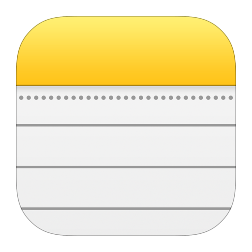
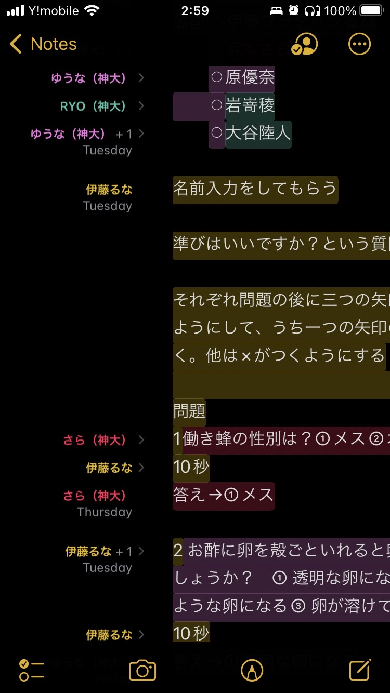
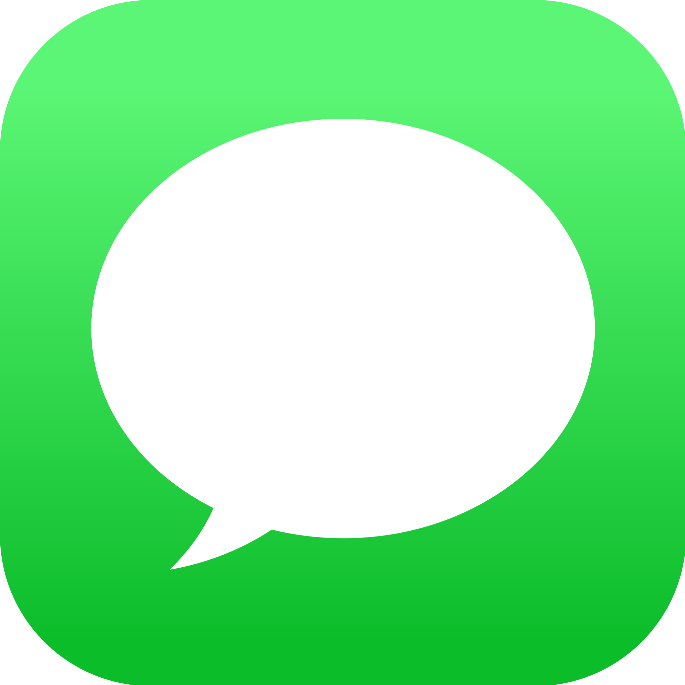
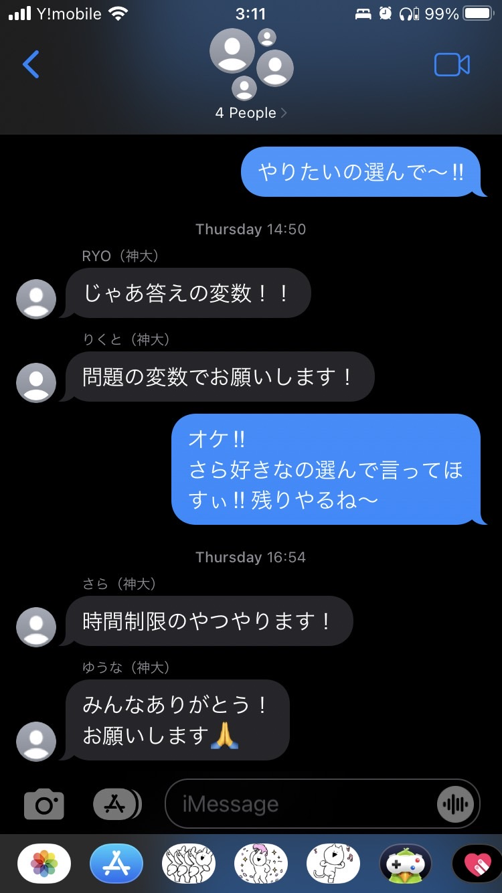
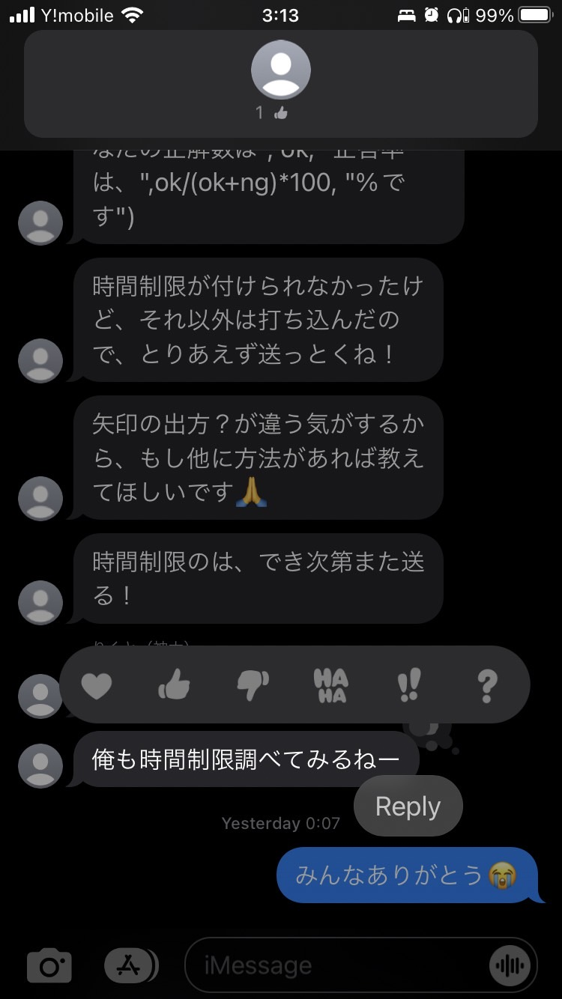

- iPhoneのメモ機能
- iMessage
- Live Share(VS Code)
◯メモ

iPhone ユーザー限定となってしまいますが、メモ機能を有効に利用していますか？
メモがただのメモをするアプリと思ったら大間違いです！！
絵を描くこと、表を作ること、書類をスキャンするなど様々な機能の中に「共有」の機能があります。
今回の課題をするにあたって「情報が端的にまとまった状態ですぐに共有される」という条件はとても役に立つポイントでした。
メモの共有機能は「誰が、いつ、メモのどの部分を編集したのか」がわかるようになっています。

私たちはこの機能を使って随時変更をおこなっていました。
◯iMessage

連絡をとるのはIMessageを利用しました。ここではメモを共有しみんなが見れるようにしたり、質問がある場合はグループにヘルプを求める場として利用しました。
 
また、1人1人が役割分担することで1人に負担が行くことを避けました。結果、自分の仕事が終わった人は他の人のサポートができてきたのでとても良かったと思います。
他にもメッセージにgood ボタンやハートをつけることもできます。このようにして今の進捗状況を伝え合っていました。
◯Live Share